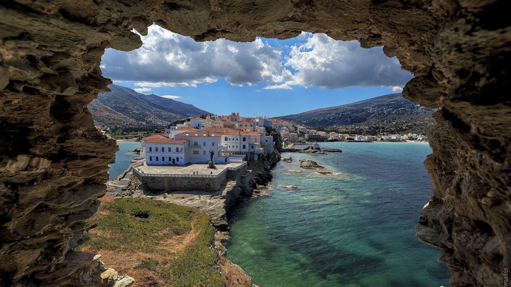
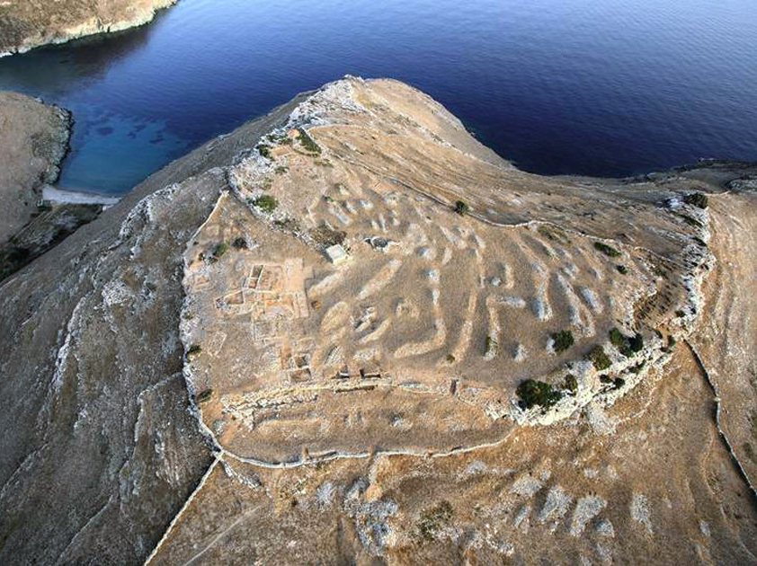

Where does the name 'Andros' come from?
Andros has had ancient names such as Hydroussa (with abundant waters), Epagrís, Nonagría (wet field), Lasia (with rich vegetation), and Gavros. The prevailing version regarding the island’s name originates from mythology.
Mythology of Andros
Before 3000 BC, from the union of Apollo and Roio (daughter of Staphylos, son of the god Dionysus), Anios was born. Apollo made Anios the king of Delos, and he had three daughters and two sons, Andros and Mykonos. His sons ruled over the two islands, giving them their names. The mythological origin of the island’s inhabitants explains the dominant worship of Dionysus and the presence of the gods-ancestors on their coins.

Andros throught the historical periods
Prehistoric and Archaic Period
The history of Andros during the prehistoric and archaic period states that its first inhabitants were the Pelasgians. They were followed by the Carians, then the Phoenicians, the Cretans, and finally the Ionians. During the Bronze Age, settlements such as Mikrogyali, Plaka, and Strofila flourished, with Strofila considered the largest surviving Neolithic settlement in the Aegean. The settlements of Zagora and Ipsili also reached great prosperity between 900-700 BC, as evidenced by the traces of the settlement discovered in Zagora (near Zaganiari). The prevailing theory suggests that the island’s first settler was Andros.
Classical Period
During the Classical period, Andros had its capital in Paleopolis. The prosperity of this period is evident from its rich coinage and the impressive statue Hermes of Andros (a Hellenistic-era replica housed in the Archaeological Museum in Chora). In the 7th century BC, the Andriots, along with the Chalkidians, founded four cities-colonies in Chalkidiki: Akanthos, Argilos, Sani, and the renowned Stageira, birthplace of the philosopher Aristotle. One of the best-preserved monuments of the Hellenistic period is the Tower of Agios Petros, built in a cylindrical shape. Dionysus was the primary deity worshipped by the inhabitants.
Andros During the Athenian Hegemony and the Peloponnesian War
With the onset of the Peloponnesian War, Andros fought alongside the Athenians. However, after the defeat in Sicily in 412 BC, the island revolted. After numerous battles, the final outcome was the establishment of an oligarchic government, and Andros fought alongside the Spartans.

The largest preserved settlement of the Neolithic Era in the Aegean.